Durban is a haven for surfers with long beaches lapped by the warm Indian Ocean, a mild sub-tropical climate and excellent infrastructure lure tourists by the millions.An important industrial center and port,the city owes its cosmopolitan air to its rich ethnic diversity forged from a turbulent history.
 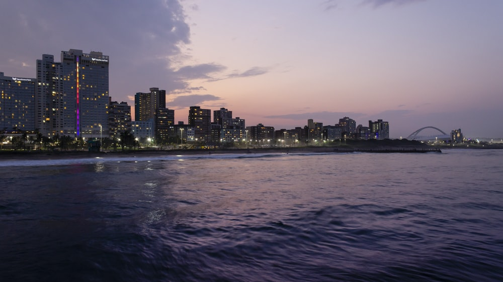
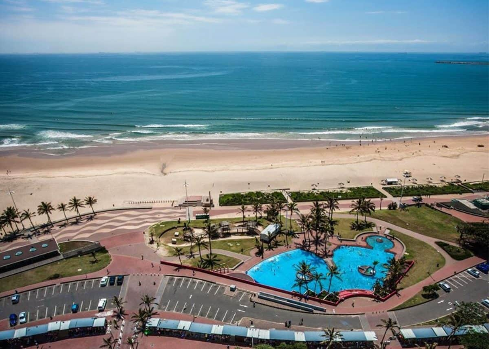
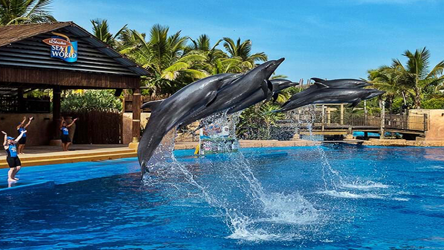
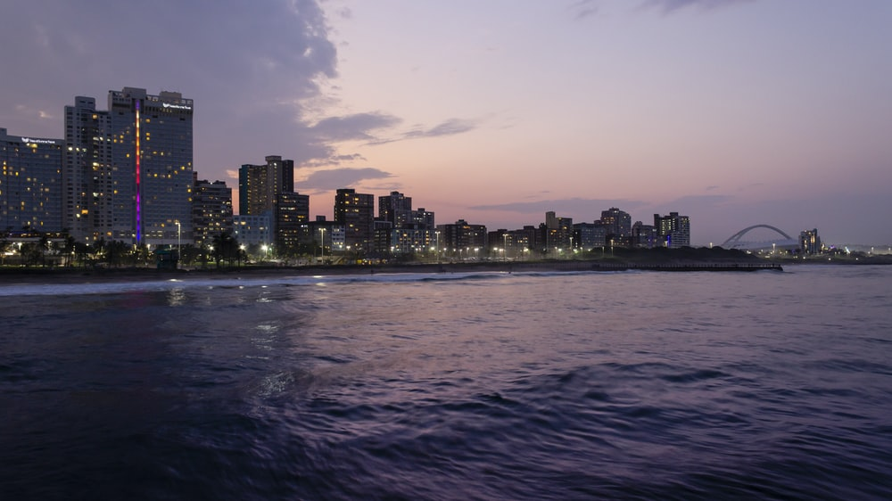
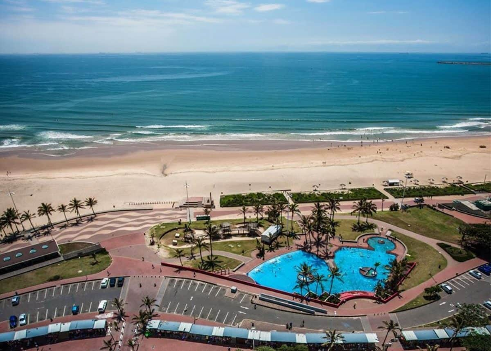
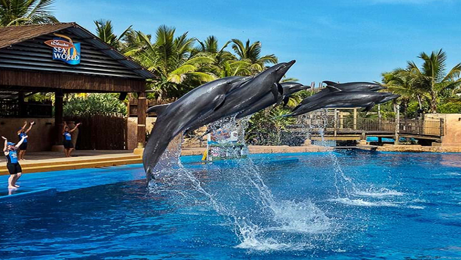
 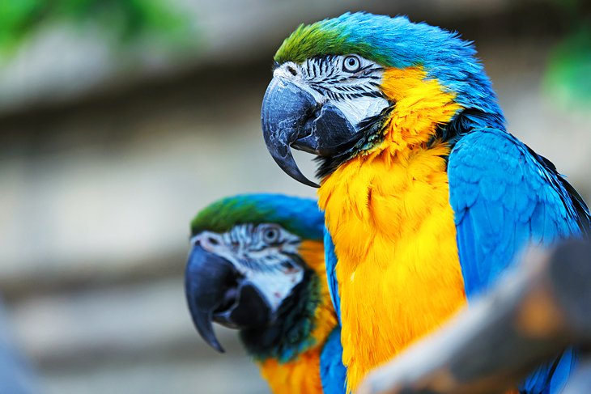
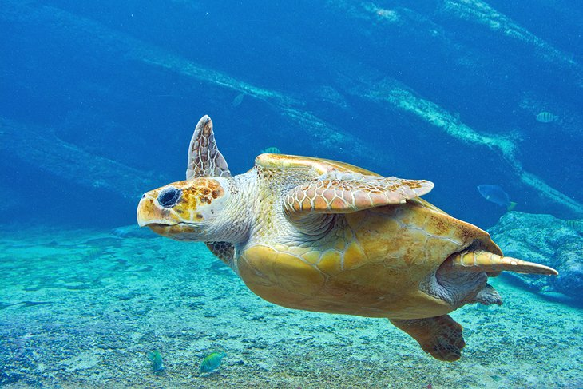
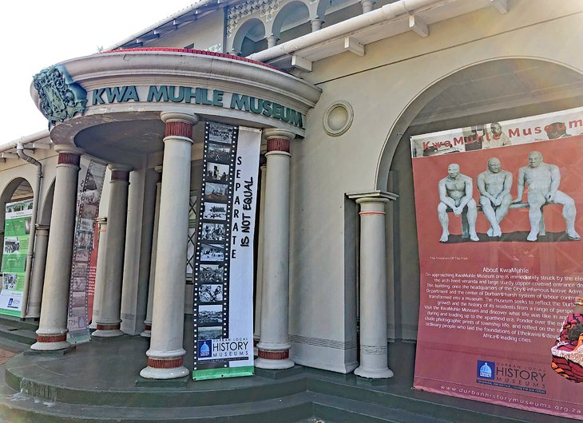
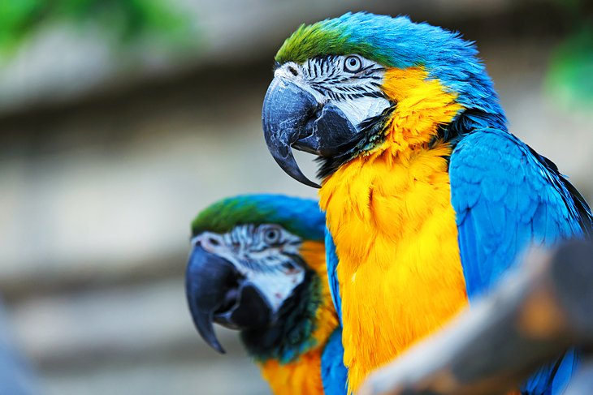
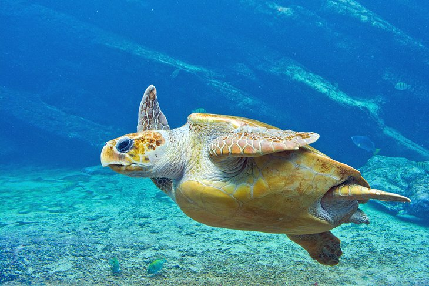
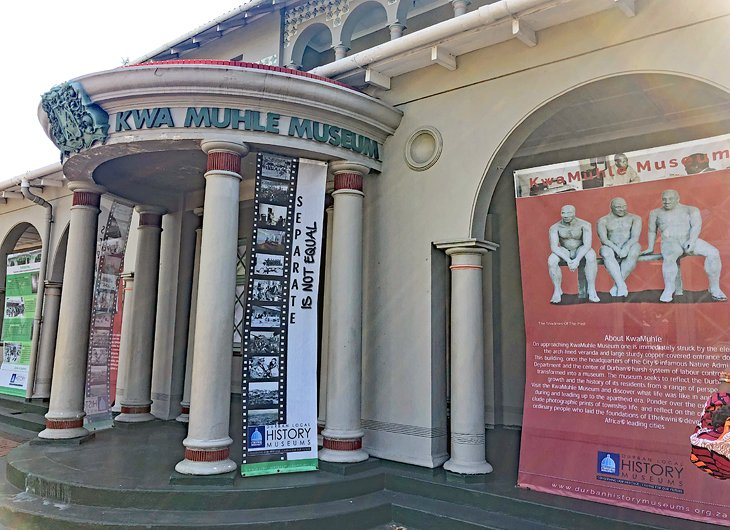